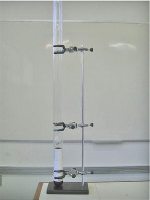
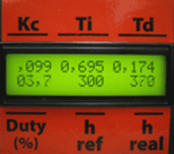
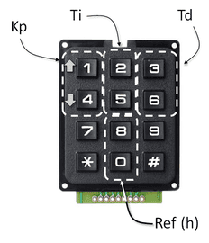
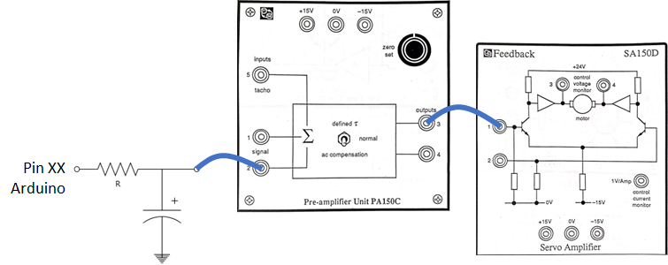

Data: 10/11/2022
Planejado: verificar que timer’s do Arduino usar para trabalhar com:
interrupção à
Saída PWM: conferir que timers o sketch do Arquino já reserva para saída PWM.
prever interrupção de hardware para interface mais “prática” com o usuário. Note: como vamos indicar ao Arduino quando o mesmo deve gerar a onda quadrada e quando ele deve cessar a onda quadrada? Mais tarde, quando vamos querer testar o algoritmo do PID sobre o kit real Feedback, será necessária alguma estratégia semelhante para indicar:
rodar algoritmo de controle/suspender algoritmo de controle:
modificar ganhos do PID. Neste caso, são vários parâmetros:
sintonia de PID variando
ativar/desativar método do relé.
A alguns anos atrás já foi implementado curso, via TCC, um kit para laboratórios de controle digital baseado no processo da “bola no tubo”, no qual, a idéia é controlar a altura de uma bola dentro de tubo submetido a uma corrente interna de ar.
Aparência física do processo:

Neste processo, o usuário especifica a altura desejada para a bolinha, entre 0 a 550 mm. Onde
As interfaces do usuário com este processo eram:
interface de saída:
Display LCD de 16x2:

interface de entrada, com processo no moto automátivco (algoritmo de controle sendo eecutado):
teclado matricial 4x3:

onde:
a tecla * atuava como um “ESC” e;
a tecla # como um “ENTER”.
Nota: obviamente, outras teclas eram liberaradas para uso interativo com um menu de operações com este sistema.
Detalhe: se faz planejar alguma interface simples e mínima com o usuário que não necessariamente seja via porta serial (comunicação USB).
A ideia aqui é gerar um nível DC para atuar como sinal atuador de controle para o kit da Feedback. Temos que disponibilizar uma tensão DC variando entre 0 até 5 Volts numa das entradas do módulo Servo Amplificador (SA150D). Eventualmente (para atuar como um seguidor de tensão), podemos usar o módulo pré-amplificador (PA150C) para a partir deste, injetar o sinal de controle no módulo Servo Amplificador. Algo semelhante ao ilustrado na próxima figura:

Supondo que vamos gerar a onda senóidal na faixa dos 40 Hz, uma boa frequencia de corte para o filtro passa-baixas aqui seria a partir dos 400 Hz.
É bom lembrar que o sinal PWM gerado por “default” pelo Arduino, parece:
delay() e millis() — ver “Arduino Analog Output:Impossible Analog; using Digital Pins. How to generate an Analog Output varying from 0V to 5V using only Digital pins!” (acessado em 03/11/2022)A tabela a seguir detalha melhor que temporizadores do Arduino trabalham com que pino para gerar sinal PWM:
| Pinos Arduino (PWM) | Timmer | Registrador | Frequencia |
|---|---|---|---|
| 3 | Timer2 | OC2B | 490 Hz |
| 5 | Timer0 | OC0B | 980 Hz |
| 6 | Timer0 | OC0A | 980 Hz |
| 9 | Timer1 | OC1A | 490 Hz |
| 10 | Timer1 | OC1B | 490 Hz |
| 11 | Timer2 | OC2A | 490 Hz |
Note que:
Fernando Passold, em 10/11/2022